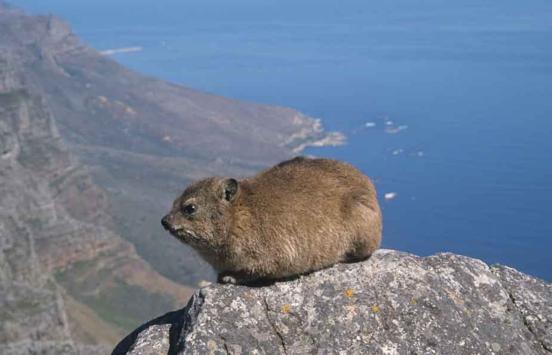
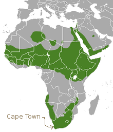
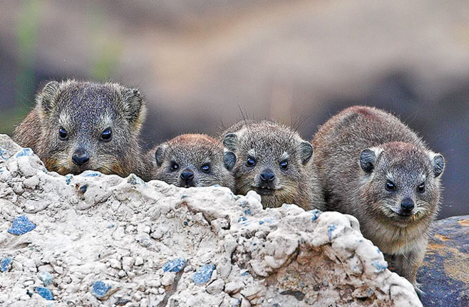

class: center, middle # My Favourite Animal ## Daniel 2KH  --- # Dassie A Dassie is a little animal that lives in Africa. It lives on Table mountain in Cape town and parts of Africa near the equator. The English name for a Dassie is a rock hyrax.  --- # Amazing facts! Dassies: * are Light brown * are 50 cm long * weigh about 4kg --- # Why I like Dassies: * They are from my mum's home country. * They are cute. * They are funny. 